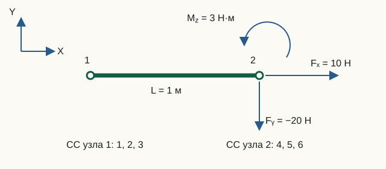

Граничные условия и узловые нагрузки
Опора задаёт, какие узловые движения запрещены, а нагрузка — какие обобщённые силы приложены к разрешённым компонентам. В МКЭ‑Ф эти данные не изменяют исходные матрицы: для каждого расчёта заново строятся индексы СС и вектор нагрузки.
Свободные и закреплённые СС
Функция partitionDOFs преобразует записи опор в два непересекающихся списка:
fixedDOFs— СС с заданным нулевым перемещением;freeDOFs— неизвестные, которые войдут в редуцированную систему.
fixedDOFs ∪ freeDOFs = {1, …, n}, fixedDOFs ∩ freeDOFs = ∅
Матрицы K и M при этом остаются полными и неизменными. Такое разделение сохраняет физический смысл исходной модели и позволяет корректно вычислить реакции.
Типы опор
Запись имеет вид type,node,0,0,0. Ненулевые заданные перемещения пока не поддерживаются.
| Тип | Свободно | Закреплено | Физическая интерпретация |
|---|---|---|---|
1 | ничего | все СС узла | полное закрепление узла |
2 | только ux | uy и рамный θz | свободно только горизонтальное перемещение; поворот запрещён |
3 | только uy | ux и рамный θz | свободно только вертикальное перемещение; поворот запрещён |
4 | θz у рамы | ux, uy | шарнирное закрепление рамного узла |
5 | uy, thetaZ | ux | ux |
6 | ux, thetaZ | uy | uy |
7 | ux, uy | thetaZ | thetaZ |
У ферменного узла нет θz, поэтому тип 4 совпадает с полным закреплением. Повторное закрепление одной СС считается ошибкой: оно обычно указывает на дублирующую или неверно составленную запись, а не на «более жёсткую» опору.
Сопряжённые перемещения и силы
Каждой узловой СС соответствует обобщённая сила, совершающая на ней работу:
| Модель | Степени свободы | Компоненты нагрузки |
|---|---|---|
| ферма 112 | [ux, uy] | [Fx, Fy] |
| рама 113 | [ux, uy, θz] | [Fx, Fy, Mz] |
Mz — момент вокруг оси Z, сопряжённый повороту θz. Это не сила Fz: пространственного перемещения uz в плоской модели нет. Поэтому ненулевой Mz у ферменного узла отклоняется, а не игнорируется.
Четыре истории нагрузки
Столбцы временной истории соответствуют t = 0, Δt, …, NΔt. Если несколько записей действуют на одну СС, их значения суммируются.
| Секция / тип | Значение | Допустимый расчёт |
|---|---|---|
bcforce_stat / 10 | постоянный вектор в статике; в динамике — совместимый одношаговый импульс при t = Δt | статический и переходный |
bcforce_harm / 11 | F(t) = F0 sin(2πft) | переходный |
bcforce_pulse / 12 | F0 только при t = Δt | переходный |
bcforce_step / 13 | F0 во всех столбцах, включая t = 0 | переходный |
Для одношагового прямоугольного импульса дискретный импульс равен F0Δt. Поэтому изменение шага времени при неизменной амплитуде меняет переданный импульс.
% Пять столбцов: t = [0, dt, 2dt, 3dt, 4dt]
pulse = [0, F0, 0, 0, 0];
step = [F0, F0, F0, F0, F0];Лабораторная 04. Узловые нагрузки: сумма сил и история во времени
Цель — восстановить по таблице, какая сила действует в каждый момент времени, и различить статическую нагрузку, одношаговый импульс и ступень.

Исходные данные и обозначения
Порядок СС: [u₁x; u₁y; θ₁; u₂x; u₂y; θ₂]. Временные амплитуды узла 2: [10; −20; 3] (Н, Н, Н·м); частота гармоники 1 Гц. Сетка: t = [0; 0,25; 0,5; 0,75; 1] с. В отдельном статическом случае складываются нагрузки [10; −20; 3] и [5; 2; −1].
До запуска: расчёт на бумаге
- Найдите три компоненты суммарной статической нагрузки узла 2.
- Составьте таблицу Fₓ(t) для трёх случаев: импульс действует только при t = Δt, ступень — с t = 0, гармоника задаётся как 10·sin(2πt).
- Найдите дискретный импульс каждой компоненты F₀Δt; единица для момента — Н·м·с.
Запуск в Octave
Выполните из корня проекта. Готовая функция печатает результаты; для этой работы изменять её код не требуется.
addpath(pwd);
setup;
addpath(fullfile(pwd, "reference", "examples"));
r = example_04_load_histories();Работа с результатами
- Сверьте статическую сумму с последними тремя строками
Summed static load vector. Первые три строки относятся к ненагруженному узлу 1. - Подпишите пять столбцов трёх напечатанных временных таблиц значениями из
Time grid [s]. В этих таблицах показаны только СС 4–6: первая строка — Fₓ, вторая — Fᵧ, третья — M_z. - Сверьте первую строку каждой таблицы со своим прогнозом. Восстановите две остальные строки умножением той же временной функции на −20 и 3. Малые числа около нуля у гармоники объясняются округлением.
- Сверьте
Discrete pulse impulse components F0*dtсо своим расчётом. Предскажите импульс при уменьшении Δt вдвое с той же амплитудой; определите, как изменить амплитуду, чтобы сохранить импульс.
Статическая сумма: [15; −18; 2]. Для Fₓ строки равны [0 10 0 0 0], [10 10 10 10 10] и [0 10 0 −10 0]. Импульс: [2,5; −5; 0,75] (Н·с, Н·с, Н·м·с). При половинном шаге с той же амплитудой он уменьшается вдвое; для сохранения нужна двойная амплитуда.
Что включить в отчёт
Сумму статических нагрузок, таблицу или эскиз трёх историй Fₓ(t), единицы импульса и объяснение влияния шага времени.
Исходный код главы
partitionDOFs.m— проверка опор и разбиение СС;getNodalLoadComponents.m— соответствие нагрузок узловым СС;buildStaticLoad.m— свежий статический вектор;buildTransientLoad.m— временные истории;example_04_load_histories.m— исполняемая лабораторная.
Статические равномерные нагрузки
Секция eload_uniform задаёт погонные qx/qy в локальной или глобальной системе только для рам 113. Полный вектор F складывается из узловых и согласованных элементных вкладов. Для локальной нагрузки fe=[qxL/2, qyL/2, qyL²/12, qxL/2, qyL/2, −qyL²/12]ᵀ, а глобальный вклад равен Tᵀfe. Подробности и правила редактора — в формате входных данных.
SPC: ux, uy, thetaZ
Опоры хранятся как маски fixUx/fixUy/fixThetaZ. Типы 1–4 сохраняют прежний смысл; новые типы: 5 — только ux, 6 — только uy, 7 — только thetaZ. Для фермы тип 7 запрещён, а экспорт использует только типы 1, 3 и 2. При смене семейства маски сохраняются; перед переходом к ферме нужно убрать thetaZ. Повторы диагностируются по узлу и СС.